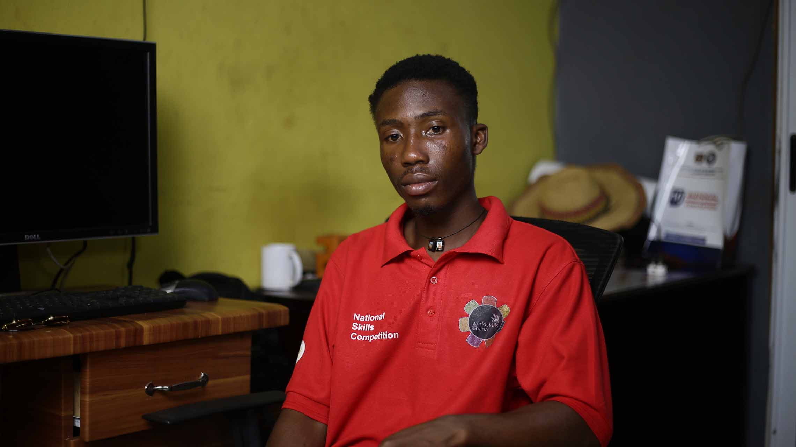

Home
Rafting wevsite
Rafting Site plan
Linkedin
facebook
Asum Richmond | WDD 130

Hello! My name is Asum Richmond and I am from Ghana, Sunyani. BYU-IDAHO student. I enjoy.
Aba Nigeria Temple
Monticello Utah Temple
Idaho Falls Idaho Temple